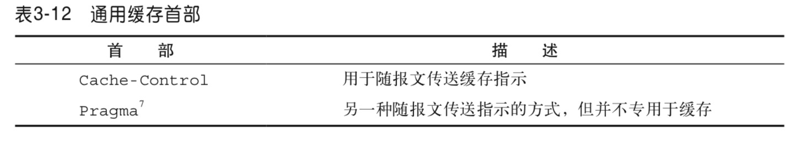
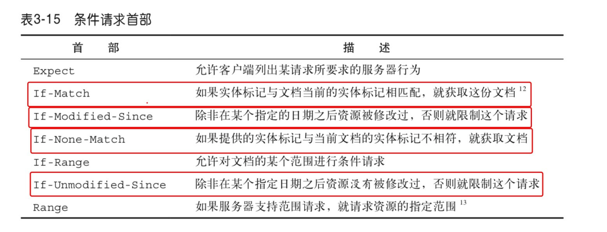
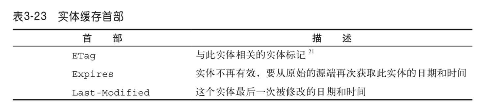
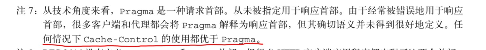
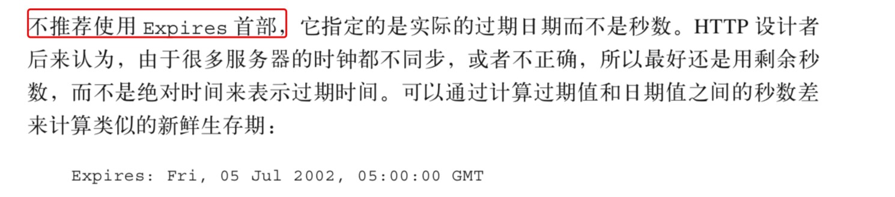

<html><head><meta charset='utf-8'><meta name='viewport' content='width=device-width, initial-scale=1'>
<meta name='applicable-device' content='pc'><meta name='keywords' content='电脑,电脑讲解,电脑技术,编程,电脑故障维修HTTP缓存字段总结' />
<script src='../../highlight/highlight.pack.js'></script>
<link rel='stylesheet' type='text/css' href='../../highlight/styles/monokai.css'/>

<link rel='stylesheet' href='../../fenxiang/dist/css/share.min.css'>
<script src='../../fenxiang/src/js/social-share.js'></script>
<script src='../../fenxiang/src/js/qrcode.js'></script>

</head><body><script>hljs.initHighlightingOnLoad();</script><script>
var system ={};  
var p = navigator.platform;       
system.win = p.indexOf('Win') == 0;  
system.mac = p.indexOf('Mac') == 0;  
system.x11 = (p == 'X11') || (p.indexOf('Linux') == 0);     
if(system.win||system.mac||system.xll){
document.write("<link href='../css/3.css' rel='stylesheet' type='text/css'>");}else{ document.write("<link href='../css/3wap.css' rel='stylesheet' type='text/css'>");}</script><script src='../../js/3.js'></script><div class='div2'><div class='heading_nav'><ul><div><li><a href='../../index.html'>首页</a></li>
</div><div onclick='hidden1()' >分享</div>
</ul></div></div>
<div id='heading_nav2'> 
<li class='row' >
<div class='social-share' data-mode='prepend'><a href='javascript:' class='social-share-icon icon-heart'></a></div></li></div><script charset='utf-8' src='../../3/js/hengfu.js'></script><script charset='utf-8' src='../../3/js/hengfu2.js'></script><hr><div class='div1'><div class='biaoti'><center>HTTP缓存字段总结</center></div><div class='banquan'>原文出处:本文由博客园博主迪迪的博客提供。<br/>
原文连接:https://www.cnblogs.com/yadiblogs/p/10906719.html</div><br>
    <h4 id="首部">首部</h4>
<ul>
<li>通用首部：有些首部提供了与报文相关的最基本的信息，它们被称为通用首部。</li>
<li>请求首部：请求首部是只在请求报文中有意义的首部。</li>
<li>响应首部</li>
<li>实体首部： 用来描述HTTP报文的负荷，由于请求和响应报文中都可能包含实<br />
体部分，所以在这两种类型的报文中都可能出现这些首部。实体首部提供了有关实体及其内容的大量信息，从有关对象类型的信息，到能够对 资源使用的各种有效的请求方法。总之，实体首部可以告知报文的接收者它在对什 么进行处理。</li>
</ul>
<h4 id="与缓存相关的http首部字段">与缓存相关的HTTP首部字段</h4>
<p>1：通用首部字段里：<br />
<br />
2：请求首部字段里：<br />
<br />
3：实体首部：<br />
</p>
<blockquote>
<p>此处才开始正文~</p>
</blockquote>
<hr />
<p>Pragma和Expires来规范。虽然这两个字段早可抛弃，但为了做http协议的向下兼容，你还是可以看到很多网站依旧会带上这两个字段。</p>
<p></p>
<p></p>
<blockquote>
<p>所以这里不再介绍过时的东东啦，大家简单了解这是关于缓存的就可以啦。</p>
</blockquote>
<h2 id="cache-control">Cache-Control</h2>
<p>这是个通用首部字段， 其有很多值可以设置：</p>
<ul>
<li>no-store：禁止缓存对响应进行复制</li>
<li>no-cache： 可以存储在本地缓存区，但是在与原始服务器验证新鲜度之前不能给客户端使用。</li>
<li>max-age：表示的是从服务器将文档传来之时起，可以认为此 文档处于新鲜状态的秒数</li>
</ul>
<blockquote>
<p>剩下的都是缓存校验字段。</p>
</blockquote>
<p>这些字段都是根据修改时间来判断文件是否有变动：</p>
<ul>
<li>Last-Modified</li>
<li>If-Modified-Since: Last-Modified-value</li>
<li>If-Unmodified-Since: Last-Modified-value</li>
</ul>
<p>只根据修改时间来判断会有问题：如果在服务器上，一个资源被修改了，但其实际内容根本没发生改变，会因为Last-Modified时间匹配不上而返回了整个实体给客户端（即使客户端缓存里有个一模一样的资源）</p>
<p>为了解决这个问题，推出了Etag实体首部字段。服务器会通过某种算法，给资源计算得出一个唯一标志符（比如md5标志），在把资源响应给客户端的时候，会在实体首部加上“ETag: 唯一标识符”一起返回给客户端。比如：<code>Etag: &quot;5d8c72a5edda8d6a:3239&quot;</code></p>
<blockquote>
<p>如果服务器发现ETag匹配不上，那么直接以常规GET 200回包形式将新的资源（当然也包括了新的ETag）发给客户端；如果ETag是一致的，则直接返回304知会客户端直接使用本地缓存即可。</p>
</blockquote>
<p>那么客户端是如何把标记在资源上的 ETag 传回给服务器的呢？请求报文中有两个首部字段可以带上 ETag 值：</p>
<ul>
<li><code>If-None-Match: ETag-value</code></li>
<li><code>If-Match: ETag-value</code></li>
</ul>
<blockquote>
<p>需要注意的是，如果资源是走分布式服务器（比如CDN）存储的情况，需要这些服务器上计算ETag唯一值的算法保持一致，才不会导致明明同一个文件，在服务器A和服务器B上生成的ETag却不一样。</p>
</blockquote>
<p>附上参考链接：<a href="https://imweb.io/topic/5795dcb6fb312541492eda8c">点击跳转</a>，以及《HTTP权威指南》</p>

</div>
</div><hr><script charset='utf-8' src='../../js/sming.js'></script></body></html>